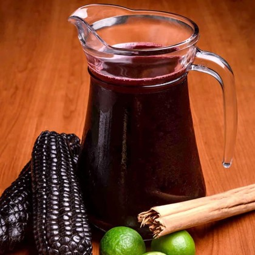

Jugo de Chicha Morada
La Chicha Morada es una bebida tradicional peruana, refrescante y deliciosa, hecha a base de maíz morado. Es popular en diversas celebraciones y se considera un símbolo de la cultura peruana.
0
Jugo de Maracuyá
El jugo de maracuyá es una bebida refrescante y deliciosa, hecha a partir de la fruta de maracuyá, también conocida como fruta de la pasión. Es muy popular en varios países de América Latina, especialmente en Perú, Colombia y Brasil.
0

Jugo de Narajada
El jugo de naranjada es una bebida refrescante y popular, especialmente en climas cálidos. Se elabora principalmente a partir de naranjas frescas y es conocido por su sabor dulce y ácido.
0